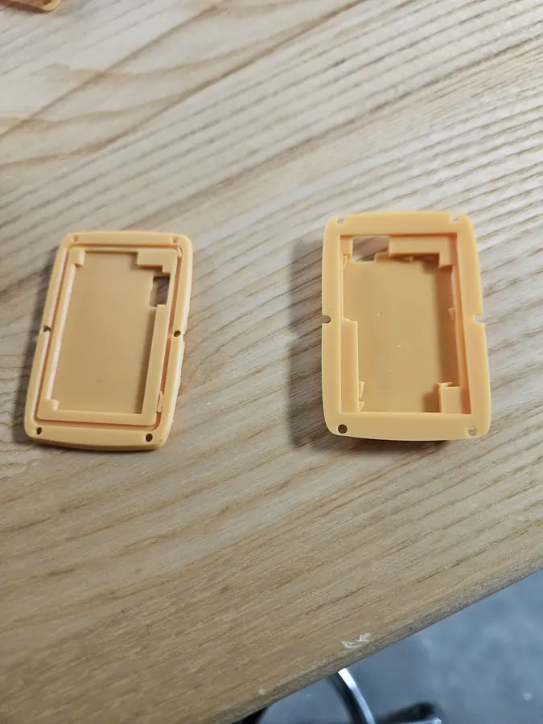
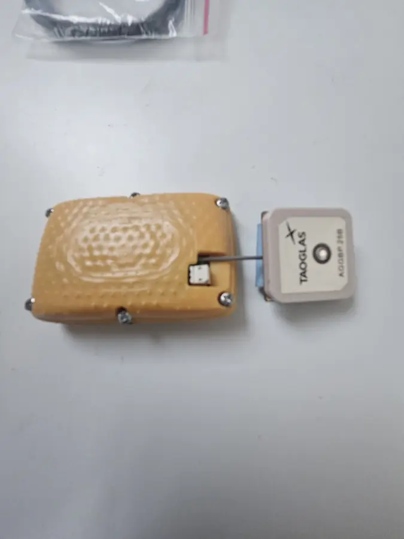
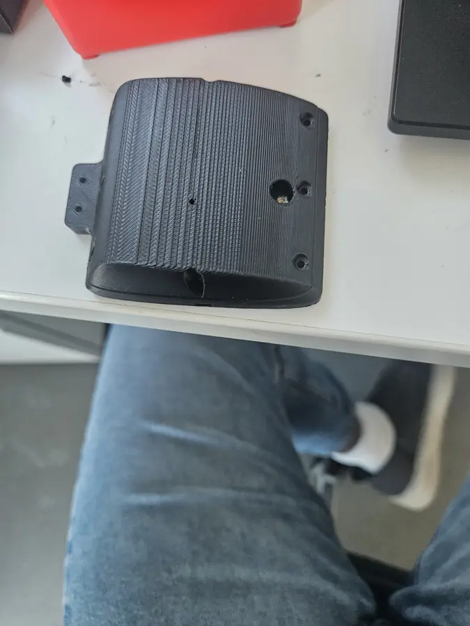
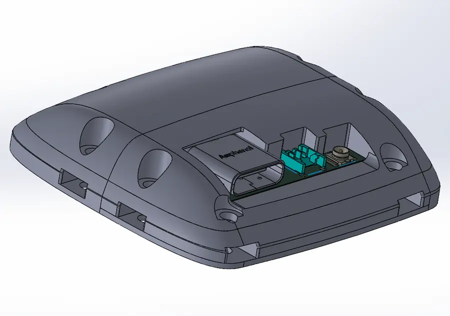
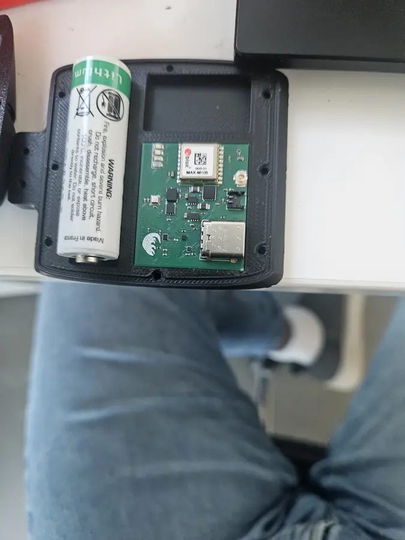
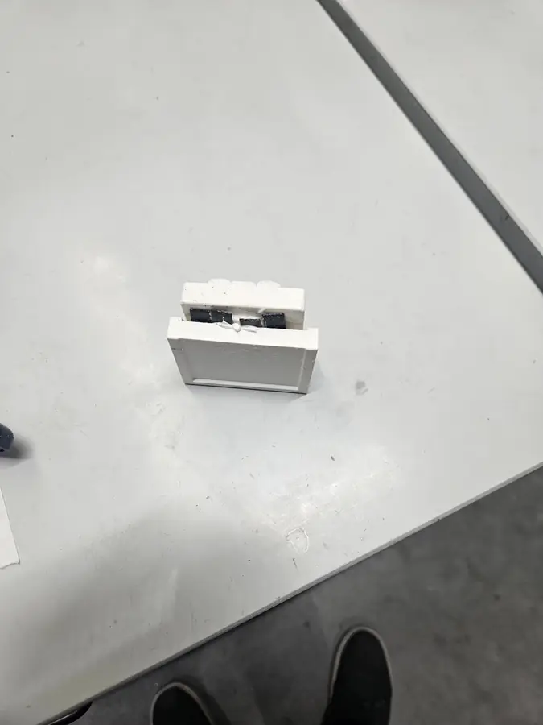
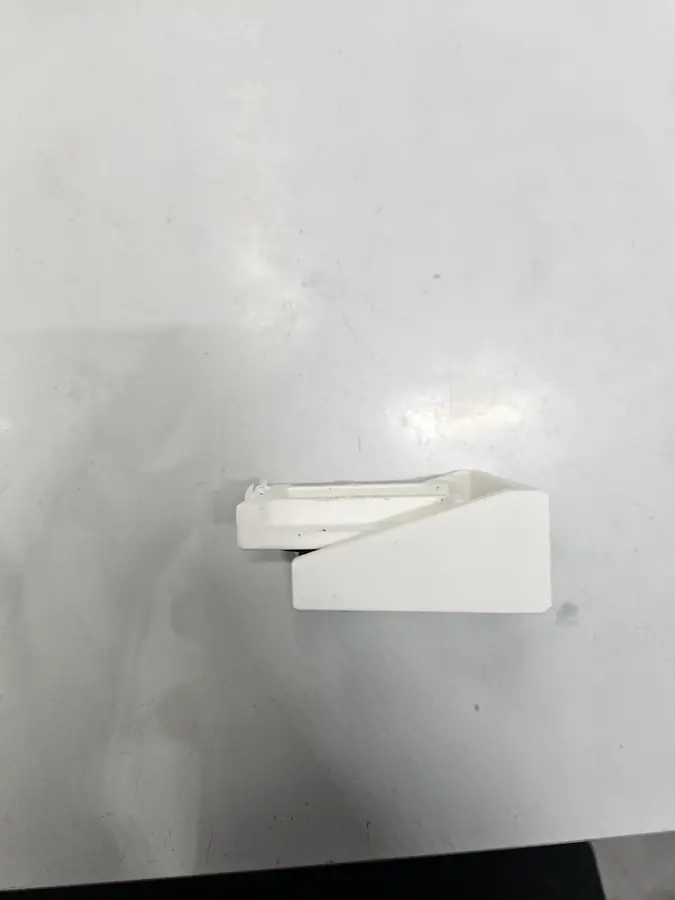
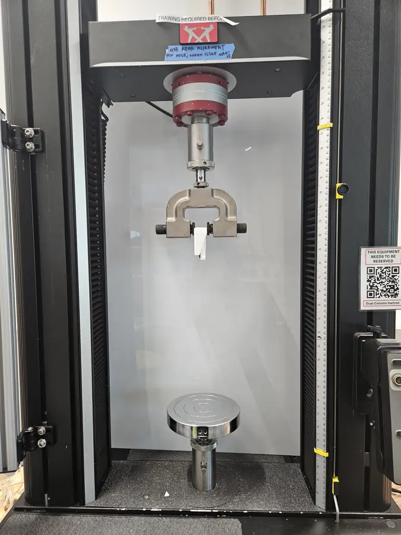
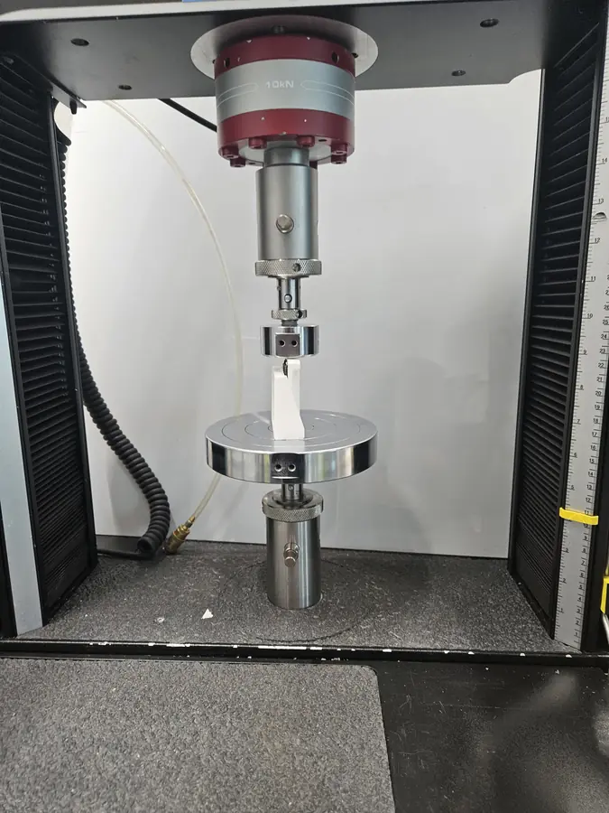
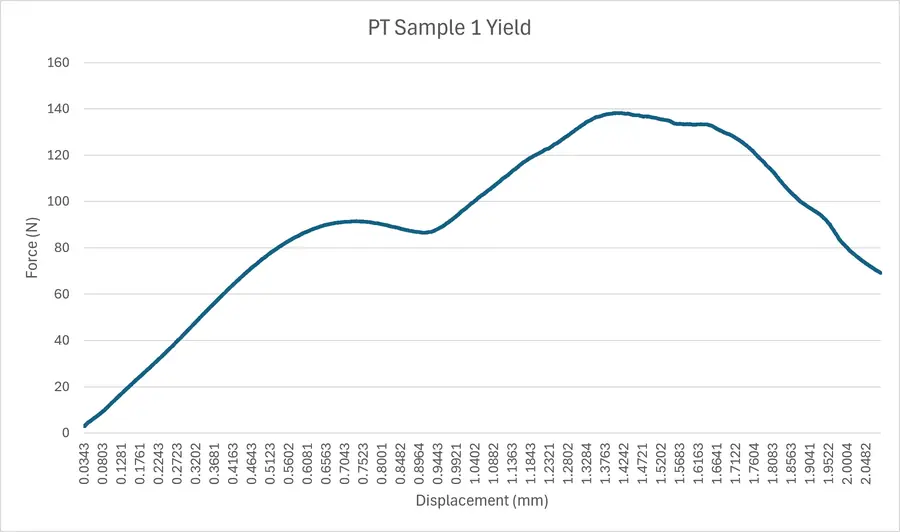

The animals
The black-bellied pangolin (Phataginus tetradactyla) and the white-bellied pangolin (Phataginus tricuspis) are small, tree-climbing pangolins from the forests of West and Central Africa. Adults weigh only about 1–3 kg. The IUCN lists them as Vulnerable and Endangered respectively, largely because of hunting and trafficking. They are also notoriously hard to study: shy, often nocturnal, and spending much of their time in dense canopy.
Tracking them is hard. A recent telemetry study of white-bellied pangolins (Emogor et al., Oryx) got very little usable movement data from long field campaigns, because of short battery life, dense canopy and tags that were hard to recover. The authors recommend tags of no more than 3% of body mass, which is only tens of grams for these species.
Design constraints
The tag's PCB carries GPS, an IMU and an altitude sensor, so together they record where the animal goes, how it moves and how high it climbs. The enclosure has to satisfy requirements that pull against each other:
- Small and light, so the tag doesn't change how the animal moves or climbs.
- Waterproof around delicate electronics, in a rainforest, on an animal that climbs and pushes through vegetation.
- Room for the PCB, battery and GPS antenna in a low profile with nothing to snag.
- A reliable attachment. Pangolins' tapered heads and short necks rule out collars, so tags have to be mounted to the scales. The attachment method was one of the main things we experimented with.
Enclosure iterations
I designed multiple enclosure versions, trading internal volume, wall thickness, sealing and outer shape against each other, and testing different shells and mounting features from one version to the next.





Attachment testing
The attachment had to be tested at the tag's real scale, not just on coupons. I designed fixtures that hold an enclosure in an Instron universal testing machine and pull the bonded interface to failure.





Sample 1 held a peak of about 138 N, roughly 14 kgf. That is hundreds of times the weight of a tag in the tens of grams, which leaves margin for the far larger snag and impact loads a climbing animal can apply. The tests gave us real numbers for comparing attachment approaches.
Related: the pangolin camera tag, an earlier prototype aimed at getting visual data from the same animals.